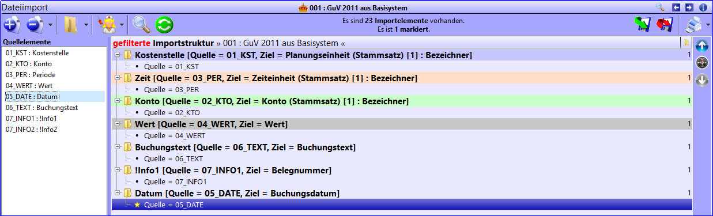

Import
Die Importe erreichen Sie über die Funktion [8.1] Transfer > Importe. Innerhalb dieser Funktion können Daten aus verschiedenen Basissystemen in Kosy Enterprise eingelesen werden. Dies erfolgt entweder über eine Textdatei (im Format .txt, .csv, .ktf, .prn etc.) oder über die direkte Anbindung einer Schnittstelle. Im letzten Fall fällt die Erstellung der Textdatei weg.
Übersicht
Datenquelle
Entscheiden Sie über die Datenquelle, ob Sie eine Textdatei einlesen möchten oder eine Schnittstelle direkt in Kosy Enterprise integrieren möchten. Wählen Sie eine direkte Schnittstelle, so finden Sie in der Registerkarte Datenquelle eine Auswahlmöglichkeit, über welche Sie entscheiden können, welche Daten Sie aus Ihrem Basissystem auslesen möchten. Die Beschreibung der Spalten der Textdatei entfällt ebenso wie die Textdatei selbst. Wählen Sie eine Textdatei als Datenquelle, so finden Sie in der Registerkarte Datenquelle eine Vorschau Ihrer Textdatei.
Zieltabelle
Die Zieltabelle definiert, in welchen Menüpunkt Sie Daten einlesen möchten. Sie sind nicht daran gebunden, Buchungssätze aus Ihrem Basissystem zu übernehmen. Es wäre ebenso denkbar, Verteilungsschlüssel für eine Datei einzulesen. Wählen Sie hier den Menüpunkt, in welchen Sie einlesen möchten. Handelt es sich bspw. um Buchungssätze, so wählen Sie den Menüpunkt 4.1 Buchungssätze zur Buchungsgruppe.
Zieldatensatz
Der Zieldatensatz definiert, wohin Sie einlesen möchten. Entscheiden Sie hier, ob Sie Daten direkt einlesen möchten oder Buchungssätze bspw. in Standards oder Verteilungsschlüssel einlesen möchten. Lesen Sie Buchungssätze ein, so wählen Sie bitte den Menüpunkt <direkt>. Bleibt der Zieldatensatz <leer>, so werden keine Daten eingelesen. Es erscheint eine Fehlermeldung.
Hinweis
Bitte beachten Sie, dass Standards oder Verteilungsschlüssel zunächst im jeweiligen Menüpunkt angelegt werden müssen, damit sie in der Auswahl erscheinen.
Buchungsblock
Beim Buchungsblock handelt es sich um eine Verfeinerung der Buchungsgruppe. Es ist somit möglich, mehrere Textdateien in Kosy Enterprise einzulesen, ohne dass diese sich während des Einleseprozesses gegenseitig beeinflussen. Der Buchungsblock wird vom Programm automatisch bei Anlage eines neuen Datensatzes fortlaufend nummeriert.
Bei dem Buchungsblock „0“ handelt es sich um einen besonderen Buchungsblock, der nicht beim Importieren verwendet werden sollte. Manuelle Eingaben werden in den „reservierten“ Buchungsblock „0“ geschrieben.
Beispiel
Möchten Sie bspw. in eine Datei zwei Jahre einlesen und haben daher zwei Textdateien, so lesen Sie das erste Jahr in den Buchungsblock 1 ein und das zweite Jahr in den Buchungsblock 2. Somit werden die Einleseprozesse voneinander getrennt. Egal welche Datenbehandlung Sie gewählt haben, es können bspw. keine Daten aus dem anderen Jahr gelöscht werden.
Datenbehandlung
Über die Datenbehandlung bestimmen Sie, wie mit neuen und bestehenden Datensätzen umgegangen wird. Die einzelnen Optionen werden im Folgenden kurz erläutert.
1: nur vorhandene aktualisieren
Wählen Sie „nur vorhandene aktualisieren", werden bereits bestehende Datensätze durch neue Datensätze ersetzt. Falls bei einem Element keine neuen Werte auftreten, bleiben die alten erhalten. Neue Elemente werden nicht angelegt.
2: vorhandene aktualisieren, neue hinzufügen
Möchten Sie, dass zusätzlich neue Datensätze hinzugefügt werden, so wählen Sie „vorhandene aktualisieren, neue hinzufügen". Hierbei werden bestehende Daten aktualisiert und neue Datensätze eingelesen.
3: nur neue hinzufügen
Die Einlesevariante „nur neue hinzufügen" führt dazu, dass ausschließlich Datensätze eingelesen werden, die zuvor nicht vorhanden waren. Bereits vorhandene Datensätze werden nicht verändert.
4: nicht-importierte Datensätze löschen
Wählen Sie die letzte Einlesevariante, wenn bereits bestehende Datensätze geändert und neue Datensätze hinzugefügt werden sollen. Datensätze, die keine Berücksichtigung finden, werden gelöscht.
Warning
Ob ein Buchungssatz neu ist, wird vor allem an der Kombination der vier Dimensionen und an dem Wert festgemacht. Es wird aber auch geprüft ob der Datensatz während des aktuellen Importvorgangs schon geprüft wurde, sodass auch mehrere Buchungen mit demselben Wert auf derselben Kombination von Dimensionen eingelesen werden können.
Referenzbehandlung
Bei der Referenzbehandlung wird überprüft, ob der Bezugspunkt, in diesem Fall der über den Bezeichner identifizierte Stammsatz, für einen bestimmten Datensatz vorhanden ist. Hier entscheiden Sie, was mit Elementen passieren soll, deren Referenz fehlt.
Beispiel
Möchten Sie bspw. auf den Stammsatz P.PLAN einlesen, dieser ist aber nicht vorhanden, so fehlt die Referenz.
1: bei fehlender Referenz nicht importieren
Fehlt der Bezugspunkt für ein Element, so wird der Datensatz nicht importiert.
2: bei fehlender Referenz auf Dummy referenzieren
Elemente mit fehlender Referenz werden unter einem Dummy-Element (künstlich erstelltes Element) angelegt. Beachten Sie hierbei, dass ein Datensatz nicht in allen Dimensionen ein Dummy-Element haben darf.
3: fehlende Referenzelemente anlegen, vorhandene nicht aktualisieren
Möchten Sie Elemente mit fehlender Referenz anlegen, jedoch bereits vorhandene Referenzen nicht ändern, so wählen Sie diese Option.
4: fehlende Referenzelemente anlegen, vorhandene aktualisieren
Neue Elemente mit fehlender Referenz werden angelegt, bestehende Referenzen werden erneuert.
Feldaktualisierung
Für die unterschiedlichen Einstellungsvarianten wird im Folgenden angenommen, dass Sie für bestimmte Stammsätze Titel einlesen möchten. Die Feldaktualisierungen beziehen sich aber nicht ausschließlich auf das Feld Titel, sondern können sich auch auf Buchungsfeldinhalte beziehen.
1: nicht importieren
Titel werden nie eingelesen.
2: nie aktualisieren
Beim erstmaligen Erstellen eines Elementes werden neue Titel angelegt, danach findet nie wieder eine Aktualisierung statt.
3: nur aktualisieren, falls der alte Wert leer oder „NULL" ist
Ist ein Titelfeld leer oder hat es noch keinen Titel, so wird es aktualisiert. Ist bereits ein Titel definiert, so bleibt dieser bestehen.
4: nur aktualisieren, falls der neue Wert nicht leer ist
Ein bestehendes Titelfeld wird nur aktualisiert, wenn ein neuer Datensatz einen Titel liefert.
5: nur aktualisieren, falls der neue Wert nicht „NULL" ist
Ein bestehendes Titelfeld wird nur aktualisiert, wenn ein Datensatz die Information für einen Titel überhaupt enthält.
6: immer aktualisieren
Der Titel wird immer aktualisiert.
Hinweis
Bei Importelementen, die solche Felder (wie Titel oder Buchungsfelder) beschreiben, können Sie in der Importstruktur individuell eine andere Einstellung für die Feldaktualisierung treffen. Ein Buchungstext sollte bspw. immer aktualisiert werden.
Aggregation
Hier entscheiden Sie wie verfahren werden soll, wenn mehrere Datensätze die selbe Kombination von Referenzen („Koordinaten“) haben , also auf die selbe Zelle geschrieben werden. Die Auswahlen werden anhand folgenden Beispiels erläutert.
Beispiel
Wir nehmen an, dass in Ihrer Einlesedatei vier Werte enthalten sind, welche sich alle auf die gleiche Planungseinheit-Konto-Zeit-Segment-Kombination beziehen. Es liegen folgende Werte in genau dieser Reihenfolge vor: 5, -7, 0, 6.
1: nicht aggregieren
In Summe ergibt sich ein Wert von 4, jedoch finden Sie in der Buchungsansicht vier Buchungssätze mit den Werten 5, -7, 0 sowie 6. Die Buchungssätze werden nicht aggregiert.
2: Summe bilden
Lassen Sie die Summe bilden, so entsteht ein Wert von 4 und gleichzeitig finden Sie in der Ausgabe auch nur einen einzigen Buchungssatz mit diesem Wert.
Bei dieser und den Varianten 5-12 werden keine Buchungsfelder gefüllt.
3: ersten Wert verwenden
Es wird der erste Wert mit dem entsprechenden Buchungssatz übernommen. Sie finden somit einen Wert von 5 in der Ausgabe vor.
4: letzten Wert verwenden
Es wird der letzte Wert mit dem entsprechenden Buchungssatz übernommen. Sie finden somit einen Wert von 6 in der Ausgabe vor.
5: Minimum verwenden
Es wird der kleinste Wert mit dem entsprechenden Buchungssatz übernommen. Sie finden somit einen Wert von -7 in der Ausgabe vor.
6: Minimum der signifikanten Werte verwenden
Es wird der kleinste signifikante (d.h. von null verschiedene) Wert mit dem entsprechenden Buchungssatz übernommen. Sie finden somit einen Wert von -7 in der Ausgabe vor.
7: Minimum der absoluten Werte verwenden
Es wird der kleinste absolute (d.h. ohne Beachtung des Vorzeichens) Wert mit dem entsprechenden Buchungssatz übernommen. Sie finden somit einen Wert von 0 in der Ausgabe vor.
8: Maximum verwenden
Es wird der größte Wert mit dem entsprechenden Buchungssatz übernommen. Sie finden somit einen Wert von 6 in der Ausgabe vor.
9: Maximum der signifikanten Werte verwenden
Es wird der größte signifikante (d.h. von null verschiedene) Wert mit dem entsprechenden Buchungssatz übernommen. Sie finden somit einen Wert von 6 in der Ausgabe vor.
10: Maximum der absoluten Werte verwenden
Es wird der größte absolute (d.h. ohne Beachtung des Vorzeichens) Wert mit dem entsprechenden Buchungssatz übernommen. Sie finden somit einen Wert von -7 in der Ausgabe vor.
11: Durchschnitt bilden
Aus den vorhandenen Werten wird der Durchschnitt gebildet. Es entsteht ein Wert von ( 5 - 7 + 0 + 6 ) / 4 = 1.
12: Durchschnitt der signifikanten Werte bilden
Aus den vorhandenen, signifikanten (d.h. von null verschiedenen) Werten wird der Durchschnitt gebildet. Es entsteht ein Wert von ( 5 - 7 + 6 ) / 3 ≈ 1,33.
Hinweis
Die hier eingestellte Aggregation kann in der Importstruktur unter „Wertebehandlung (für Konten)“ überstimmt werden.
Letzte Ausführung
Das Informationsfeld letzte Ausführung ermöglicht die Wahrung der Transparenz über Importprozesse. Hier erkennen Sie, wann der Importvorgang das letzte Mal ausgeführt wurde.
Datenquelle
Haben Sie in der Registerkarte Übersicht im Feld Datenquelle die Auswahl „Textdatei“ gewählt, so können Sie die Transferdatei auswählen, die Sie zuvor mit Hilfe der Schnittstelle ausgelesen haben. Auch der Import von Dateien im csv-Format ist möglich. Bei Textdateien mit fester Spaltenbreite können Sie außerdem definieren, welche Informationen in der Datenquelle enthalten sind.
Wählen Sie hier im oberen Bereich der Maske Ihre Textdatei über das Ordnersymbol aus. Alternativ geben Sie den Transferpfad manuell ein. Die Benutzung einer Pfadvariable (siehe Abschnitt technische Administration > Einstellungen im Programm > Pfadvariablen) sowie einer Wildcard-Funktion sind möglich.
Mit der Wildcard-Funktion können Sie dynamische Angaben für Textdateien machen. Setzen Sie ein Sternchen "*" in den Namen ein, dürfen an der Stelle beliebig viele beliebige Zeichen vorkommen. Der Rest des Namens (davor oder dahinter) muss aber mit dem Namen der Datei(en) übereinstimmen. Mit einem Fragezeichen "?" darf an der Stelle genau ein beliebiges Zeichen vorkommen.
Ist eine Textdatei gewählt, werden die ersten 100 Zeilen als Vorschau angezeigt.
Beispiel
Besitzen Sie Textdateien mit der Betitelung guv1, guv2 sowie guv3, so geben Sie in den Transferpfad für den Namen der Textdatei "guv?" ein. Kosy Enterprise zeigt Ihnen alle drei Dateien an und wählt für die Vorschau die ersten 100 Zeilen der Gesamtdatei, die aus allen drei Textdateien besteht.
Bei Dateien ohne Trennzeichen und mit fester Spaltenbreite müssen Anfang und Länge jeder Spalte manuell angegeben werden. Hierzu legen Sie mit  ein neues Textfeld an und beschreiben damit eine Spalte der Textdatei.
ein neues Textfeld an und beschreiben damit eine Spalte der Textdatei.
Hierbei empfiehlt sich folgendes Vorgehen:
Markieren Sie zunächst mit gedrückter linker Maustaste einen entsprechenden Bereich in der Vorschau (blauer Bereich). Legen Sie dann ein neues Feld an. Anfang und Länge des markierten Bereiches werden direkt in das neu angelegte Textfeld übernommen. Benennen Sie nun das Textfeld sprechend und wählen Sie einen sinnvollen Bezeichner, welcher nur einmal vergeben werden kann. Greifen Sie bspw. eine Kostenstelle ab, so benennen Sie das Feld mit dem Bezeichner 01_KST und dem Titel Kostenstelle.
Möchten Sie nachträglich Anfang oder Länge des Textfeldes ändern, so markieren Sie in der Vorschau den entsprechenden Bereich und führen Sie einen Doppelklick in das Feld Anfang oder Länge des entsprechenden Textfeldes aus.
Möchten Sie direkt entscheiden, ob es sich bei dem abgegriffenen Feld um ein Datum oder einen Text handelt, so definieren Sie dies über die Spalte Feldtyp. Können oder möchten Sie keine Festlegung treffen, so lassen Sie den Feldtyp bitte auf <automatisch> stehen.
Hinweis
Beschreiben Sie möglichst auch Felder, die Sie noch nicht auswerten wollen. Diese könnten für spätere Auswertungen interessant sein. Eine Aufstellung der Informationen unserer Schnittstellendateien stellen wir Ihnen auf Wunsch zur Verfügung. Zu einigen Schnittstellen finden Sie die Schnittstellenbeschreibung auch auf unserer Homepage zum Download.
Haben Sie in der Registerkarte Übersicht im Feld Datenquelle hingegen die Schnittstelle ausgewählt, so begleitet Sie hier ein Assistent durch die Ausleseeinstellungen für Ihr Basissystem. Die Beschreibung der Textdatei entfällt.
Importstruktur
In der Importstruktur bestimmen Sie, welche Informationen aus der Datenquelle in welche Elemente nach Kosy Enterprise importiert werden sollen.
Hier starten Sie, indem Sie über das Ordnersymbol  eine Importstruktur generieren. Kosy Enterprise legt daraufhin die meist verwendeten Importelemente an. Alternativ können Sie neue Importelemente mit
eine Importstruktur generieren. Kosy Enterprise legt daraufhin die meist verwendeten Importelemente an. Alternativ können Sie neue Importelemente mit  anlegen oder über
anlegen oder über  importieren.
importieren.
Standardmäßig werden Importelemente für Wert, Kennzeichen, Planungseinheit (Stammsatz) [1] Bezeichner, Planungseinheit (Stammsatz) [1] Titel, Konto (Stammsatz) [1] Bezeichner sowie Zeiteinheit (Stammsatz) [1] Bezeichner erstellt. Nun müssen die Quellelemente den Elementen der Importstruktur zugeordnet werden. Dafür ziehen Sie das entsprechende Quellelement mit gedrückter linker Maustaste auf das gewünschte Importelement. Grafisch dargestellt wird dies durch eine eingerückte Ordnerstruktur, wie Sie es in der Abbildung „Importstruktur“ sehen können.

Importstruktur
Haben Sie einem Importelement ein Quellelement zugeordnet, so treffen Sie die weiteren Einstellungen über die Detailansicht der Importfelder. Treffen Sie zunächst die Einstellungen für das Oberelement z. B. Planungseinheit (Stammsatz) [1] Bezeichner, später für das untergeordnete Element z. B. die Kostenstelle. Die weiterführenden Erläuterungen werden sich für eine bessere Anschaubarkeit stets auf dieses Beispiel beziehen.
Sie finden in der Detailansicht die Registerkarten Allgemein & Struktur, Umsetzungen sowie ggf. Wertebehandlung (für Konten), welche im Folgenden erläutert werden.
Allgemein & Struktur
Bezeichner
Der Bezeichner dient der eindeutigen Identifikation des Importfeldes. Der eigentliche Import ist jedoch nicht von der Wahl der Bezeichner abhängig.
Titel
In dem Datenfeld Titel ist es möglich, eine Bezeichnung für die Importfelder zu hinterlegen. Dies ist keine zwingende Angabe, dennoch sollte sie getätigt werden, damit Sie schnell eine treffende Zuordnung der Quellelemente zu den Importelementen tätigen können. Bei generierten Elementen vergibt Kosy Enterprise automatisch sinnvolle Titel.
Quelle
Die Quelle definiert den Ort der zu importierenden Daten und ist gleichzusetzen mit den Quellelementen. Wählen Sie hierfür das entsprechende Importfeld als Quellelement aus. Wählen Sie bitte für die Ordnersymbole keine Quelle aus (hier z. B. Planungseinheit (Stammsatz) [1] Bezeichner), da die Informationen der darunter liegenden Elemente automatisch „hochgeschichtet“ werden.
Feldtyp
Möchten Sie direkt entscheiden, ob es sich bei dem Importfeld um ein Datum oder einen Text handelt, so definieren Sie dies über die Spalte Feldtyp. Können oder möchten Sie keine Festlegung treffen, so lassen Sie den Feldtyp bitte auf \<automatisch> stehen.
Anfang und Länge
Beschneiden Sie über die Felder Anfang und Länge das von Ihnen gewählte Importfeld. Eine Länge von -1 bedeutet „unbegrenzt“.
Beispiel
Greift Ihr Importelement das Wort „Kosy" ab und Sie führen keine Änderungen bei Anfang und Länge durch, so wird das ganze Wort „Kosy" eingelesen. Ändern Sie den Anfang von 1 auf 2, so wird nur noch „osy" eingelesen.
Präfix
Da Sie in der Datenquelle üblicherweise nur die Kurzbezeichnungen der Strukturelemente finden, müssen Sie für einen vollständigen Bezeichner noch ein Präfix vergeben (siehe Bezeichner). I.d.R. geschieht dies auf dem übergeordneten Element (z. B. Planungseinheit (Stammsatz) [1] Bezeichner). Bitte beachten Sie, dass die Bezeichner der vier Dimensionen jeweils ein Präfix benötigen, alle anderen Elemente verlangen kein Präfix.
Hinweis
Benutzen Sie eine Umsetzgruppe, damit z. B. Ertragskonten das Präfix E. erhalten und Aufwandskonten das Präfix K., so ist die Angabe eines Präfix in diesem Feld nicht notwendig. Die Information erhält das Element über die Umsetzgruppe.
Hinweis
Auch wenn das Feld „Präfix“ meist für die Definition eines Präfix im Sinne von „Typ plus Punkt“ benutzt wird, handelt es sich vielmehr um ein freies Textfeld, das dem eingelesenen oder hochgeschichteten Inhalt vorangestellt wird. Sie können hier bspw. auch „AUF.2023“ eintragen, dann wird für alle eingelesenen Aufträge die Kurzbezeichnung mit 2023 anfangen.
Suffix
Über das Feld Suffix fügen Sie eine gewünschte Zeichenfolge analog zum Präfix an die importierten Daten an.
Umsetzgruppe
Wählen Sie hier eine von Ihnen unter dem Menüpunkt [8.3.1] Transfer > Umsetzungen > Mandantenumsetzungen angelegte Umsetzgruppe. Die Umsetzgruppe können Sie in dem Reiter "Umsetzungen" bearbeiten.
Ziel
Über das Auswahlfenster Ziel wählen Sie den Zielort des Importfeldes aus. Die von Kosy Enterprise generierten Elemente besitzen bereits ein Ziel, daher ist eine weitere Einstellung hier nicht notwendig. Das zugeordnete Quellelement (z. B. Kostenstelle) benötigt kein Ziel, da das übergeordnete Element das Ziel enthält.
Feldaktualisierung
Standardmäßig ist hier "0 : Voreinstellungen verwenden" eingestellt. Damit wird die von Ihnen getroffene Einstellung von der Registerkarte Übersicht übernommen (eine nähere Erläuterung finden Sie im Abschnitt Übersicht). Sie finden diese Einstellungsmöglichkeiten z. B. bei Buchungsfeldern oder Titeln und können darüber bei einzelnen Feldern von der in der Übersicht getroffenen Einstellung abweichen.
Importelement nach oben schichten
Wenn die Option bei der Funktion Importelemente nach oben schichten nicht gesetzt ist, fließen die Inhalte der Unterelemente nicht mehr in das übergeordnete Element.
Umsetzungen
In der Registerkarte Umsetzungen finden Sie die Umsetzungen der eingestellten Umsetzgruppe. Sie haben hier die Option der Überprüfung und möglichen Änderung Ihrer Umsetzung.

Wertebehandlung (Konten)
Sofern Erlöse oder Kosten nicht vorzeichengerecht ankommen, kann unter der Wertebehandlung eine entsprechende Anpassung vorgenommen werden. Falls Sie das Importelement Kennzeichen nutzen, kann die Umkehrung des Vorzeichens von der Belegung dieses Feldes abhängig gemacht werden. Dabei ist es möglich mehrere Kennzeichen abzufragen, in dem man pro Kennzeichen einen Datensatz anlegt. Typische Kennzeichen sind S für Soll und H für Haben. Möchten Sie die Einstellung der in der Registerkarte Übersicht im Feld Aggregation getroffenen Auswahl überstimmen, so können Sie dies hier über die Spalte Aggregation vornehmen. Ist dies nicht der Fall, so wählen Sie die Einstellung 0: Aggregation nicht verändern. Eine Erläuterung aller weiteren Einstellungsvarianten finden Sie im Abschnitt Übersicht.
Einlesen von mehreren Strukturebenen in einem Einlesevorgang
Möchten Sie durch Kosy Enterprise mehrere Ebenen einer Struktur generieren lassen, z. B. die Kunden unter den Tarifen darstellen, so erstellen Sie hier ein weiteres Importfeld: Planungseinheit (Stammsatz) [2]: Bezeichner. Alle importierten Datensätze erhalten nun zwei Verweise auf Planungseinheiten-Stammsätze. Damit können Sie für das Beispiel vier verschiedene Strukturen erzeugen: nur Tarife, nur Kunden, Kunden unter Tarifen und Tarife unter Kunden (letzteres ist i.d.R. nicht sinnvoll).
Hinweis
Parallel können bis zu vier Stammsätze je Dimension importiert werden.
Filterstruktur
Sollten Sie nicht alle Datensätze aus der Schnittstellendatei benötigen, können Sie mit den Einstellungen auf dieser Registerkarte Datensätze herausfiltern. Es werden dann nur die Sätze übernommen, die die angegebenen Bedingungen erfüllen. Es können beliebig viele Filter angelegt werden, die alle mit UND oder ODER verknüpft werden.
Legen Sie zunächst mit  ein neues Filterelement an oder importieren Sie mit
ein neues Filterelement an oder importieren Sie mit  zuvor exportierte Filterelemente. Hinterlegen Sie für ein Filterelement einen Bezeichner, einen sprechenden Titel sowie ein Quell- oder Importelement. Legen Sie ein zweites Filterelement an, so entscheiden Sie noch, ob es sich in Verbindung zum ersten Filterelement um eine UND- oder um eine ODER-Verknüpfung handeln soll.
zuvor exportierte Filterelemente. Hinterlegen Sie für ein Filterelement einen Bezeichner, einen sprechenden Titel sowie ein Quell- oder Importelement. Legen Sie ein zweites Filterelement an, so entscheiden Sie noch, ob es sich in Verbindung zum ersten Filterelement um eine UND- oder um eine ODER-Verknüpfung handeln soll.
Haben Sie ein Filterelement auf diese Weise angelegt, so finden Sie im rechten Teil der Bildschirmansicht eine Detailansicht. Die Möglichkeiten werden hier kurz erläutert.
Nicht
Möchten Sie mit dem Filter etwas ausschließen, so setzen Sie die Option Nicht. Damit werden alle Buchungen eingelesen, die der Bedingung nicht entsprechen.
Vergleichsart
Entscheiden Sie, ob Sie auf eine Zeichenkette, einen regulären Ausdruck, eine Zahl oder ein Datum prüfen möchten.
Operator
Entscheiden Sie hier, ob der Vergleichswert z. B. gleich dem Importelement sein soll, diesen nur beinhalten soll oder größer oder kleiner sein soll als dieser.
Vergleichswert
Geben Sie hier den Wert der Bedingung ein (z. B. eine Kostenstelle). Reguläre Ausdrücke sind ebenfalls möglich, sofern die Vergleichsart entsprechend eingestellt ist.
Groß-Kleinschreibung beachten
Entscheiden Sie hier, ob bei der Überprüfung des Filters die Groß-Kleinschreibung beachtet werden soll.
Aktiv
Möchten Sie, dass Ihr Filter deaktiviert, aber nicht gelöscht wird, so entfernen Sie bitte hier den Haken.
Hinweis
Wenn Sie mehrere Filter „klammern“ wollen, so legen Sie zu diesem Zwecke Zwischenknoten an.
Auswahl (Löschen)
Möchten Sie beim Import nur Werte löschen, die bestimmte Stammsätze als Referenz haben, so nutzen Sie Auswahl (Löschen). Hierbei markieren Sie die Elemente, die Sie leeren möchten. Sind keine Elemente markiert, so werden alle Buchungen des eingestellten Buchungsblocks (abhängig von der Datenbehandlung) gelöscht.